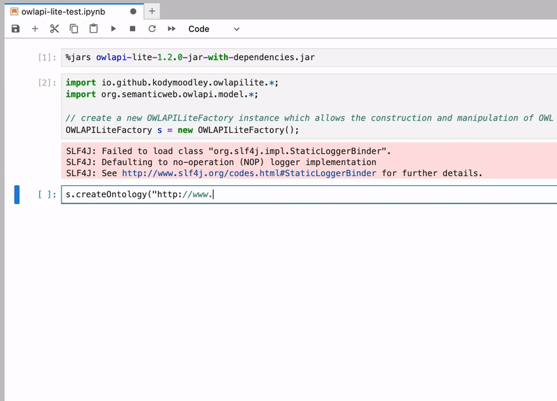
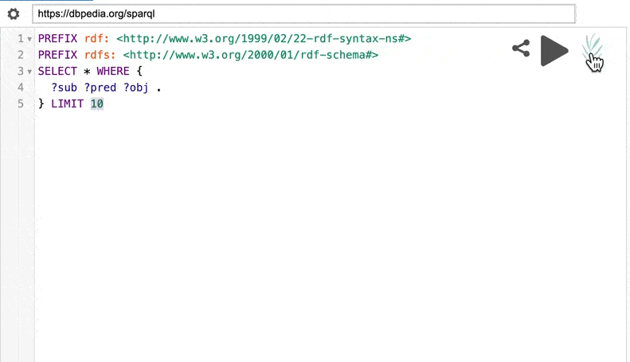
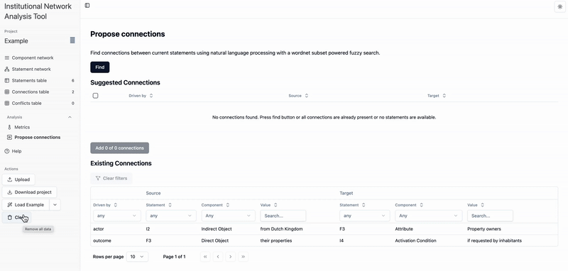
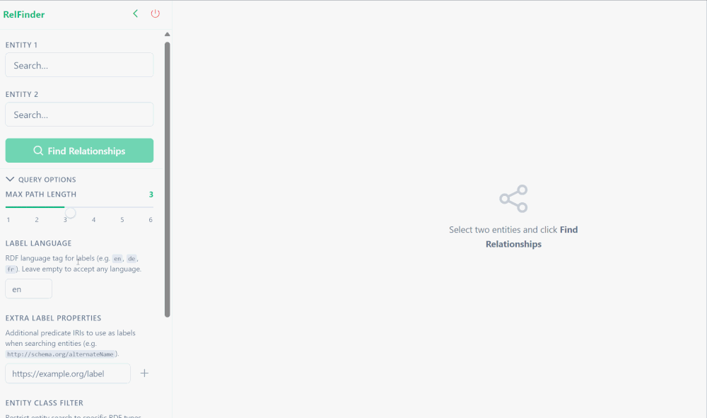
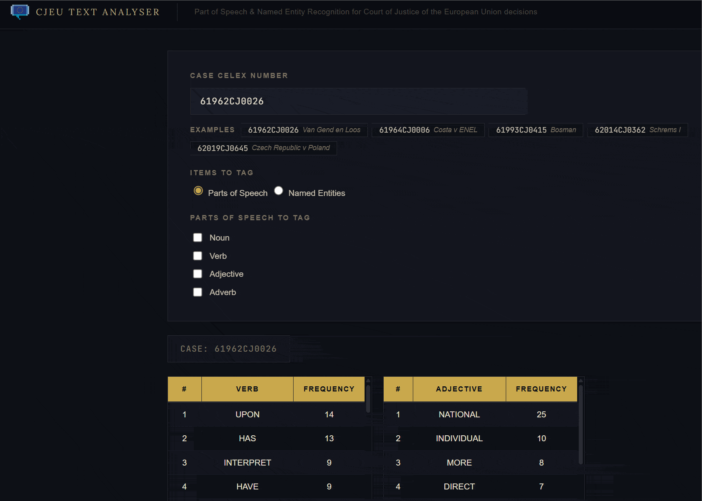
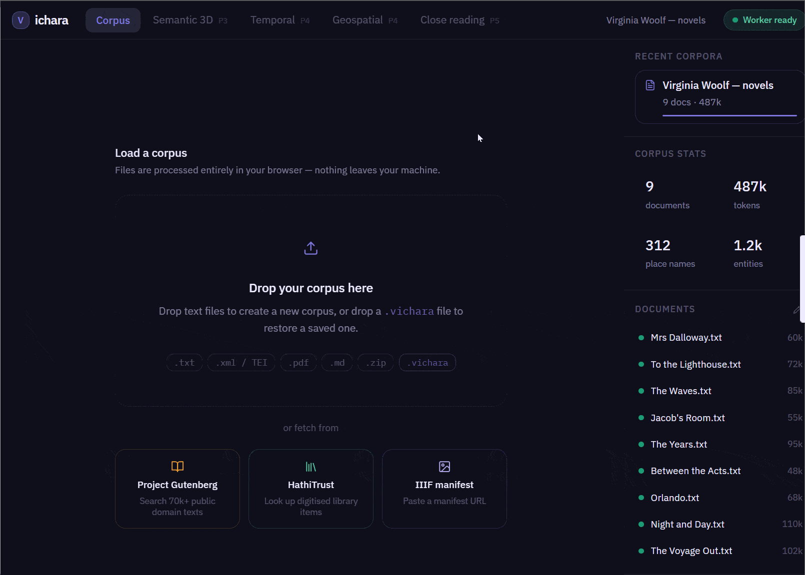

Senior Knowledge Engineer
Driven by creativity and innovation, with strong expertise in software development, information management, research, and the Web. I adapt quickly to new tools, languages, and frameworks, and am particularly skilled at understanding and improving others' code given limited documentation. I have a proven aptitude for explaining complex technical concepts clearly and effectively. I thrive in open, collaborative environments where ideas are encouraged, discussed, and thoughtfully evaluated.
Core strengths:
Demonstrated brainstorming capabilities. E.g., I won a Dutch research grant specifically for conception of an innovative research idea
Personally, and within teams, translated my ideas into concrete outputs like software, educational materials and research publications
Possess an official University Teaching Qualification. I've taught Bachelor and Masters level courses, hands-on carpentries-style workshops, and given public explainers
Project management and leadership experience in over 30 international projects.
Core competencies in modern software development and research methodologies
A selection of some open-source tools I have developed or co-developed






Qualified educator with an official University Teaching Qualification (UTQ) also known as Basis Kwalificatie Onderwijs (BKO) in the Netherlands
Netherlands eScience Center
Two-day Workshop introducing NLP to researchers and graduate students of Dutch research institutions.
Maastricht University
Bachelor course covering foundational principles of Semantic Web.
Maastricht University
Masters course on the principles of constructing, querying and mining Knowledge Graphs.
Maastricht University
Undergraduate course introducing the use of technology and software information systems (E.g., CRMs, ERPs, and SCMs) in modern business contexts. And critically evaluating their impact on organizational processes and decision-making.